Wara Tech · Documento técnico para consultoria · 12/10/2026
Yara: hidráulica e processo de tratamento
Material para Gabriel Poydo. Mostra a meta de água para o gado, a água que vamos encontrar no piloto de Tangará da Serra (MT), a máquina como está hoje, o que aconteceu no campo e o que precisamos decidir com a sua ajuda.
O caminho deste documento
Como ler os dados
01Objetivo
O que queremos
Por que este documento existe e o que o trem de tratamento precisa entregar.
Objetivo da consultoria
Definir um trem de tratamento que entregue, durante todo o piloto em Tangará da Serra (MT), água dentro da meta de qualidade para o gado, a partir da água bruta da fazenda e das suas variações ao longo do período. A rota é livre: pode ter membrana ou não, e pode ser operada manualmente, com alguém dosando e controlando, se isso garantir o resultado. Nesta fase não buscamos um produto final nem escalável. O que buscamos é eliminar a qualidade da água como variável na medição de ganho de peso dos animais tratados frente ao grupo controle.
Requisitos registrados
- Meta de qualidade
- Água ideal para o gado, pelas duas réguas do PDF da Wara Tech. Seção 02
- Água a tratar
- A da fazenda do piloto, em Tangará da Serra (MT). Seção 03
- Rota de tratamento
- Livre: com ou sem membrana; operação manual aceita (ver objetivo acima).
- Demanda
- ~2.000 a 3.000 L/dia, concentrados em ~2 h. Meta de até 3.000 L/h direto no bebedouro, sem tanque-pulmão, acionado pelo nível do bebedouro (boia ou similar).
- Pressão de entrada
- O projeto assume entrada zero: a bomba gera toda a pressão. Em campo, varia de nenhuma pressão até entrada já pressurizada (coluna d'água ou rede da fazenda), conforme o local.
- Ambiente
- Ao ar livre, em clima quente. Em alguns locais não há rede elétrica; a alternativa considerada é bomba com kit solar.
- Vida útil
- Troca de peças e elementos filtrantes no máximo a cada 2 a 3 anos.
- Tamanho do piloto
- A princípio, 56 animais tratados e 56 de controle, a confirmar pela fazenda do piloto. D20
- Prazo
- Fechar o trem e instalar uma unidade em campo em ~4 a 8 semanas. Em 07/10/2026, o início do piloto passou para dezembro; na call do mesmo dia com você, ficou registrado um possível adiamento para janeiro (dezembro é problemático depois do dia 20). D25
- Duração do piloto
- 90 dias de operação, mais ~2 semanas de instalação e calibração. Na call de 09/10/2026: 90 a 120 dias de operação. D24
- Operação no local
- A definir conforme a solução escolhida.
Fontes: Google Doc “Yara: dúvidas de filtragem (v2)”, 12/10/2026; esclarecimento do Rodrigo sobre o tamanho do piloto, 12/10/2026; calls de 07/10 e 09/10/2026; status do piloto e reunião com a fazenda do piloto (22/04/2026).
02Meta
Água ideal para o gado
A régua que o trem precisa atingir, copiada do PDF da Wara Tech.
“Nenhuma régua sozinha aprova a água do boi. A NRC olha o que está dissolvido: desempenho (GMD) e toxicidade. A potabilidade olha o que está vivo: patógenos. Água ideal = passar nas duas e ainda estar fresca, limpa e à vontade.”
| Parâmetro | Ideal | Aceitável | Evitar | Régua |
|---|---|---|---|---|
| TDS / salinidade | < 1.000 ppm | 1.000 – 3.000 | > 3.000 | NRC |
| Sulfato (SO₄) | < 500 ppm | 500 – 1.000 | > 1.500 · risco PEM | NRC |
| Nitrato (NO₃-N) | < 10 ppm | 10 – 20 | > 40 | NRC |
| pH | 6,5 – 8,0 | 6,0 – 8,5 | < 5,5 ou > 9 | NRC |
| Metais tóxicos | As <0,2 · Pb <0,1 · F <2,0 | — | acima dos limites | NRC |
| E. coli | Ausência | — | qualquer presença | 888 |
| Coliformes totais | Ausência | — | qualquer presença | 888 |
| Físico / manejo | Fresca, limpa, ad libitum | — | quente, suja, acesso restrito | Prát. |
Valores de referência para bovinos de corte. Ideal · Aceitável (monitorar) · Evitar: corrige consumo, GMD ou saúde. Texto e valores como estão no PDF.
As duas réguas
Régua 1
Química & nutricional · NRC / NASEM
- Mandato
- O que está dissolvido na água e como afeta consumo, ganho de peso (GMD) e saúde metabólica.
- Mede
- TDS/salinidade · sulfato · nitrato · pH · metais tóxicos · toxinas de alga
- Não cobre
- Bactéria · vírus · turbidez
- Origem
- NRC, “Nutrients and Toxic Substances in Water for Livestock and Poultry” (1974); NASEM, Nutrient Requirements of Beef Cattle (2016).
Régua 2
Sanitária & microbiológica · Portaria 888/2021 + EPA / WHO
- Mandato
- Segurança sanitária: ausência de patógenos na água destinada ao consumo animal.
- Mede
- E. coli · coliformes totais · carga microbiana · turbidez (indicador)
- Complementa
- Preenche exatamente o vão que a NRC deixa em aberto.
- Origem
- Portaria GM/MS 888/2021 (potabilidade, Brasil); recomendações EPA / WHO para água de dessedentação.
Fonte: “A água ideal para o gado”, Wara Tech, referência técnica, jun/2026. Fontes citadas no PDF: NRC (1974) · NASEM (2016) · Portaria GM/MS 888/2021 · EPA / WHO · OSU & NDSU Extension. Síntese do PDF: “Química aprovada ≠ água potável. Só as duas réguas juntas definem a água ideal para o gado.” Lacunas do próprio PDF: D18 D19
03Água de Tangará
A água de Tangará frente à meta
O que já foi medido na fazenda do piloto, ponto a ponto, e o que ainda falta medir.
Medido
Medido
Medido
Medido
Caminho da água na fazenda do piloto
Deslize o diagrama para o lado →
Caminho registrado no relatório da visita técnica (10/03/2026) e no status técnico (22/04/2026). Valores dos laudos de 14/05/2026, coleta sem chuva nas 24 h anteriores. O nome do manancial está em aberto D14 D15.
Meta × pontos de coleta
| Parâmetro (meta ideal) | Captação 24/11/2025 | Captação 14/05/2026 | Reservatório 14/05/2026 | Bebedouro A12 14/05/2026 | Bebedouro I12 14/05/2026 | Poço¹ 24/11/2025 |
|---|---|---|---|---|---|---|
| TDS / salinidade < 1.000 ppm |
n.m.condutividade 14,49 µS/cm | n.m.condutividade 6,15 µS/cm | n.m.condutividade 103,60 µS/cm | n.m.condutividade 136,80 µS/cm | n.m.condutividade 138,10 µS/cm | 11,00 mg/Ldentro |
| Sulfato < 500 ppm |
n.m. | n.m. | n.m. | n.m. | n.m. | < 5,00 mg/Ldentro |
| Nitrato NO₃-N < 10 ppm |
n.m.N total < 1,00 mg/L | n.m.N total 1,13 mg/L | n.m.N total 1,16 mg/L | n.m.N total 1,15 mg/L | n.m.N total 1,11 mg/L | < 0,32 mg/L como Ndentro |
| pH 6,5 – 8,0 |
7,48dentro | n.m. | n.m. | n.m. | n.m. | 7,10dentro |
| Metais tóxicos As <0,2 · Pb <0,1 · F <2,0 |
n.m. | n.m. | n.m. | n.m. | n.m. | F < 0,07 mg/LdentroAs e Pb n.m. |
| E. coli ausência |
198FORA | 20FORA | 987FORA | 908FORA | 3.448FORA | Ausênciadentro |
| Coliformes totais ausência |
475FORA | 609FORA | 1.199FORA | ≥ 24.196²FORA | ≥ 24.196²FORA | PresençaFORA |
| Físico / manejo fresca, limpa, ad libitum |
Turbidez 4,11 NTU25,3 °C; chuva nas 24 h anteriores | Turbidez 3,66 NTUsem chuva nas 24 h anteriores | Turbidez 11,40 NTUreservatório aberto, alga superficial relatada em 22/04/2026 | Turbidez 18,00 NTU | Turbidez 16,20 NTU | Turbidez < 0,34 NTU25,3 °C |
“FORA” = fora da faixa ideal do PDF. “n.m.” = não medido nessa amostra. E. coli e coliformes em NMP/100 mL. ¹ O poço não é a fonte do confinamento. ² Limite superior de quantificação do método (SMEWW 9223 B): contagem igual ou maior. Todos os valores são de laudo Medido
Fontes: laudos Hidro Análise 7567 e 7568/2025 (coleta de 24/11/2025) e 3094 a 3097/2026 (coleta de 14/05/2026), consolidados na análise técnica da Wara Tech (jun/2026). Os laudos não vão anexos a este documento.
Outros parâmetros medidos (sem alvo no PDF)
| Parâmetro | Captação 24/11/2025 | Captação 14/05/2026 | Reservatório 14/05/2026 | Bebedouro A12 14/05/2026 | Bebedouro I12 14/05/2026 | Poço 24/11/2025 |
|---|---|---|---|---|---|---|
| Alcalinidade total mg CaCO₃/L | 3,00 | 7,00 | 24,00 | 44,00 | 61,00 | 275,00 |
| Dureza total mg/L | < 5,00 | 6,00 | 36,00 | 46,00 | 40,00 | 242,00 |
| Condutividade µS/cm | 14,49 | 6,15 | 103,60 | 136,80 | 138,10 | 485,00 |
| Fósforo total mg/L | < 0,04 | < 0,04 | < 0,04 | 0,04 | < 0,04 | n.m. (ortofosfato < 0,05) |
| Ferro total mg/L | n.m. | n.m. | n.m. | n.m. | n.m. | < 0,05 |
| Manganês total mg/L | n.m. | n.m. | n.m. | n.m. | n.m. | < 0,09 |
| Cor aparente UC | n.m. | n.m. | n.m. | n.m. | n.m. | 5,00 |
| Cloreto / sódio mg/L | n.m. | n.m. | n.m. | n.m. | n.m. | 12,50 / 0,14 |
| Cálcio / magnésio mg/L | n.m. | n.m. | n.m. | n.m. | n.m. | 65,73 / 42,83 |
| Nitrito (N) / amoniacal mg/L | n.m. | n.m. | n.m. | n.m. | n.m. | 0,03 / < 0,60 |
| Sílica solúvel mg/L | n.m. | n.m. | n.m. | n.m. | n.m. | 1,70 |
| Sólidos suspensos / totais mg/L | n.m. | n.m. | n.m. | n.m. | n.m. | < 2,57 / 33,00 |
O que ainda não foi medido
| Parâmetro | Onde já foi medido | Onde falta |
|---|---|---|
| TDS, sulfato, nitrato, F | Só no poço (24/11/2025) | Captação, reservatório e bebedouros: só há condutividade e N total |
| As e Pb | Em nenhum ponto | Todos |
| pH e temperatura | Captação e poço, só em 24/11/2025 | Reservatório e bebedouros; nenhuma medição em 14/05/2026 |
| Ferro e manganês | Só no poço | Captação, reservatório e bebedouros D15 |
| COT/cor, SDI, algas | Em nenhum ponto (cor aparente só no poço) | Todos |
Rede da fazenda e ponto do piloto
- Captação
- Superficial, com pré-filtro na bomba de captação, em condição regular, que retém sedimentos maiores.
- Tentativa anterior
- Um produto de sedimentação foi aplicado no reservatório de membrana. O lodo exigiu limpeza complexa e a aplicação foi abandonada depois de uma ou duas vezes. No ano anterior, o reservatório foi limpo por causa de alga.
- Mudança planejada (2026)
- Captação direto para o reservatório, sem passar pela represa, e um segundo reservatório de membrana (de 4 para 8 milhões de litros).
- Ponto do piloto
- Baia de inovação: 4 bebedouros individuais com boia, em linha. Piso nivelado e coberto.
- Energia na baia
- Rede elétrica muito fraca, com queda de tensão significativa, segundo a equipe de campo da fazenda (22/04/2026). Plano da fazenda: migrar a baia para a rede do curral, que tem energia adequada; nenhuma fonte posterior confirma a migração. Alternativa registrada pela Wara: placas solares com bateria; energia solar ainda não testada (07/10/2026). Relato
- Pressão na baia
- Rede por gravidade; não atinge de forma consistente a faixa de 0,7 a 2 bar da máquina.
- Instalação
- Dois cenários: máquina na baia, com booster; ou máquina ao lado do reservatório, com caixa tratada elevada (~10.000 L) e tubulação curta até os bebedouros. Pendente em 22/04/2026; nenhuma fonte posterior registra a escolha.
- Dados que faltam
- Diâmetro e material da tubulação no ponto de instalação, pressão da rede na baia e vazão de outorga.
Fontes: relatório da visita técnica (10/03/2026, versão de 11/03) e status técnico (22/04/2026); call de 07/10/2026 (energia solar).
Fotos da fazenda (visita de 10/03/2026)
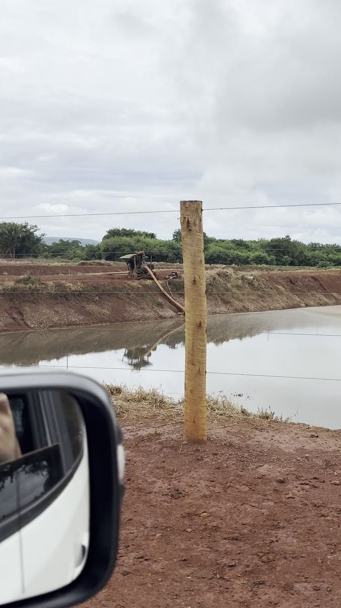
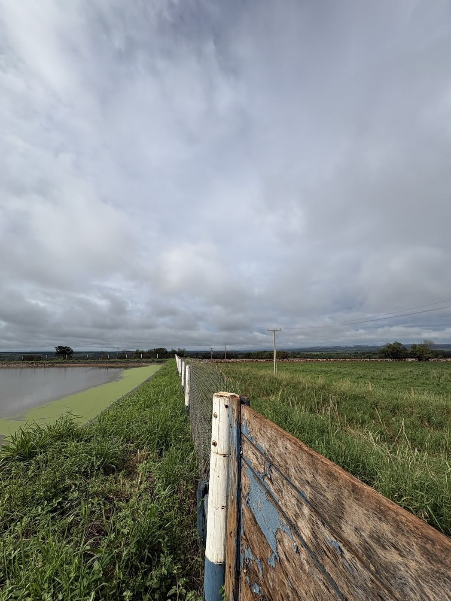
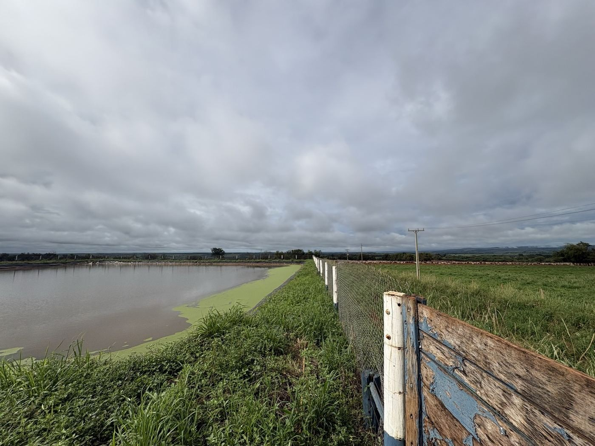
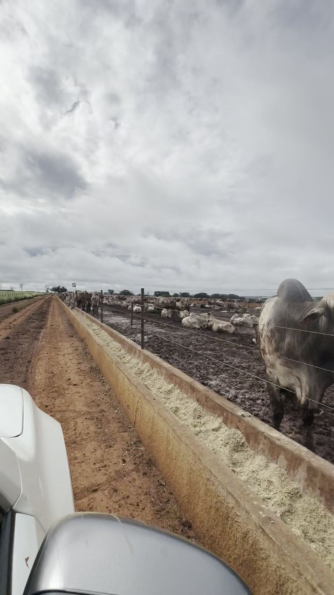
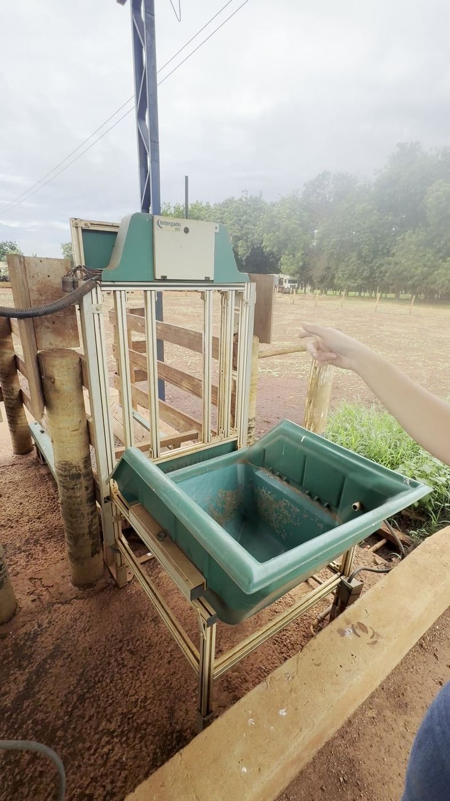
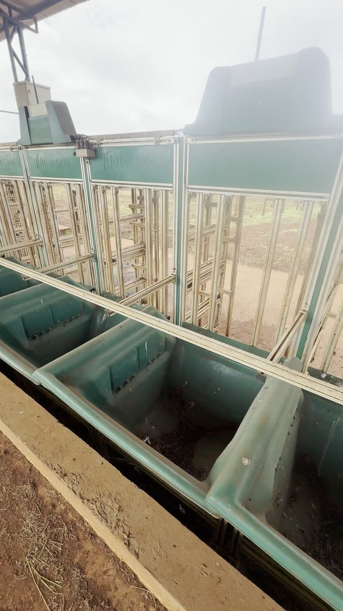
04Yara hoje
A Yara como existe hoje
Linhas, componentes e fluxo hidráulico da máquina de campo.
A água sai de uma caixa d'água, passa por uma bomba e segue por duas linhas em paralelo. Cada linha tem pré-filtração e uma ultrafiltração (UF). As linhas se juntam e vão direto ao bebedouro, que tem boia, sem reservatório intermediário.
O primeiro desenho é o P&ID da máquina como montada: o fluxograma do painel de controle, só com a parte hidráulica. O segundo, desenhado por nós, mostra a mudança feita em campo em 03/10/2026, segundo o Google Doc de dúvidas e o vídeo da montagem. Os dois não mostram a mesma composição das linhas D1.
Deslize o desenho para o lado →
P&ID da máquina como montada. Fonte: fluxograma do painel de controle (figuras 11 e 12 do pacote; arquivo de 29/09/2026). Só o desenho hidráulico, em fundo claro, com os rótulos redigitados em letra maior (mesmo texto); os campos de leitura dos indicadores de pressão (PI) foram apagados. Clique para abrir em tamanho original. Os círculos verdes com números são as válvulas motorizadas, com a numeração transcrita da figura 11. Símbolos: M = válvula motorizada; válvula sem M = manual; PI = indicador de pressão. No desenho, a válvula 3 liga a saída do “Filtro para bomba” direto à saída da máquina, sem passar pela Bomba 1; a válvula 11 fica na linha que volta das UFs para a sucção da Bomba 1. Rótulos que divergem das outras fontes: D1 D22 D23.
Montagem de 03/10/2026
Relato D1Deslize o diagrama para o lado →
Composição segundo o Google Doc de dúvidas e o vídeo da montagem de 03/10/2026. O filtro de disco é o mesmo modelo nas duas linhas. Na linha 2, a válvula de 3 vias manda para o esgoto a água que sai suja da mídia; com água limpa, segue para o disco. A numeração das válvulas não aparece porque as posições depois da mudança não foram registradas. O P&ID acima mostra filtro de mídia nas duas linhas D1.
Componentes
| Componente | O que sabemos | Tipo do dado |
|---|---|---|
| Água de entrada no teste | Caixa d'água de ~1.000 L no local do teste. Nas fazendas-alvo, a água bruta vem de reservatórios grandes, normalmente de geomembrana. | Relato |
| Bomba | Dancor AP3C, ~1 CV. Vazão nominal registrada como “da ordem de 2.000–3.000 L/h” ou 3.000 L/h, conforme o trecho da fonte. Entrega medida com balde: ~1.500 a 1.700 L/h (erro < 100 L/h). | Medido D2 |
| Vaso de mídia | VITTAX 1465-4, PRFV 14" × 65", boca de 4". Etiqueta: 150 psi (1,0 MPa) máx., 1 a 49 °C, vácuo máx. 127 mmHg. Loja Era (NEA36): 147 L; 10 bar máx.; operação recomendada de 1 a 4 bar; vazão padrão 2,5 m³/h; retrolavagem recomendada 3 a 4 m³/h. Vaso “~60% cheio”. | Fabricante |
| Mídia (por vaso) | De baixo para cima: areia grossa (25 kg), areia média (25 kg) e antracito (2 × 25 kg). Granulometria e altura das camadas não constam na nota fiscal. | Nota fiscal |
| Válvula do vaso | Runxin F56A1, manual, multivias (serviço, retrolavagem, enxágue rápido), até 4 m³/h. Fabricante: tanques de 6" a 12", 1,5 a 6 bar, 5 a 50 °C, turbidez de entrada < 20 FTU. Sem manual em mãos. | Fabricante D12 |
| Crepinas e tubo central | Crepina superior JD211 e inferior JD212, 3/4", ranhura 0,25 a 0,30 mm, para tanques de 6" a 12". Tubo central de 3/4" (25 mm), para tanques de 6" a 13". Se o tubo chega ao fundo do vaso: medição prevista a partir de 16/10/2026, na volta da máquina à PUC. | Fabricante |
| Acessórios do vaso | Quebra-vácuo Small UM1: comprado (nota fiscal). Segundo o Rodrigo, não foi instalado; a confirmar. Redução N9903-A de 4" para 2,5" (boca do tanque para a base da válvula). A válvula de alívio saiu do pedido. | Nota fiscal A confirmar |
| Filtro de disco (um por linha) | Irritec YDV “Modelo D” 3/4", 120 mesh (~130 µm), código IFYDVCDLM2C0N, discos vermelhos. Vazão máx. recomendada 5 m³/h; área filtrante 170 cm²; corpo e discos de polipropileno; vedação NBR. A família YDV vai até 200 mesh (~80 µm). | Fabricante D13 |
| UF (uma por linha) | Vazão nominal ~3.000 L/h. Modelo, fabricante, área e material da membrana desconhecidos; não há datasheet das membranas instaladas. Carcaça inox; cabeçote com O-ring, fechado por abraçadeira. | Desconhecido |
| Válvulas da linha | 12 válvulas de esfera motorizadas de 3/4", de 2 vias (posições no P&ID; funções no mapa abaixo). O P&ID mostra também válvulas manuais em série com as motorizadas. Válvula de 3 vias STK2012T DN20 3/4" a jusante da mídia, instalada em 02–03/10/2026. | Relato |
| Proteção de pressão | Desarme acima de 5 bar observado em campo; o setpoint de corte usado no teste não está confirmado. Não há válvula de alívio mecânica. | Relato D3 D5 |
| Retrolavagem | Em campo, feita à mão. A retrolavagem automática, pelo diferencial de pressão, não disparou: o limite é 8 bar, definido alto de propósito. A água filtrada de uma linha faz a retrolavagem da UF da outra; a válvula 8 cruza as linhas (pré-filtro 1 ↔ UF 2, pré-filtro 2 ↔ UF 1). | Relato D6 |
| Saída | Direto ao bebedouro, com boia mecânica de 3/4" de alta vazão, sem tanque. Quando a boia fecha, a pressão sobe e a máquina para. O religamento depois que a boia fecha não está definido. | Relato |
| Cloro | Tanque PE de 60 L e dosadora de cloro instalados; a dosadora nunca foi testada em campo. Nota de engenharia de 04/10/2026: não dosar cloro de forma contínua no piloto, com a dosadora desligada para contingência. Era uma posição anterior da Wara sobre cloro na água entregue ao gado. A recomendação do Gabriel (call de 07/10/2026) prevalece: o cloro pode ser dosado antes da membrana por motivo de processo e é retirado antes de a água ir ao gado. Ver pergunta 26. | Relato |
| Manômetros | Genebre 63 mm (0 a 10 bar) e manômetro de 300 psi com glicerina, 1/4". O P&ID tem 5 pontos de indicação de pressão (PI): descarga da Bomba 1, saída de cada filtro de mídia, linha de retorno da válvula 11 e saída das UFs. | Lista de peças P&ID |
Fontes: Google Doc “Yara: dúvidas de filtragem (v2)”; histórico de campo v2; notas fiscais da Era Ambiental (jul/2026, sem preços); identificação do filtro de disco (09/10/2026); fotos das etiquetas; cloro: nota de engenharia de 04/10/2026.
Mapa das válvulas (estado de 29/09/2026)
| Válvula | Função | Grupo |
|---|---|---|
| 0 | Saída para o bebedouro | Saída |
| 5 | Entrada da mídia 1 | Linha 1 |
| 13 | Esgoto da mídia 1 | Linha 1 |
| 4 | Esgoto da UF 1 | Linha 1 |
| 2 | Saída da UF 1 | Linha 1 |
| 6 | Entrada da mídia 2 | Linha 2 |
| 15 | Esgoto da mídia 2 | Linha 2 |
| 7 | Esgoto da UF 2 | Linha 2 |
| 9 | Saída da UF 2 | Linha 2 |
| 8 | Ligação entre as linhas depois das mídias | Entre linhas |
| 11 | Volta do concentrado das UFs para a linha | Entre linhas |
| 3 | Bypass (sem filtração) | Bypass |
Fonte: mapa informado pelo Rodrigo em 29/09/2026. Mostra o estado antes das mudanças de 02–03/10 (válvula de 3 vias e filtro de disco).
Fotos da máquina
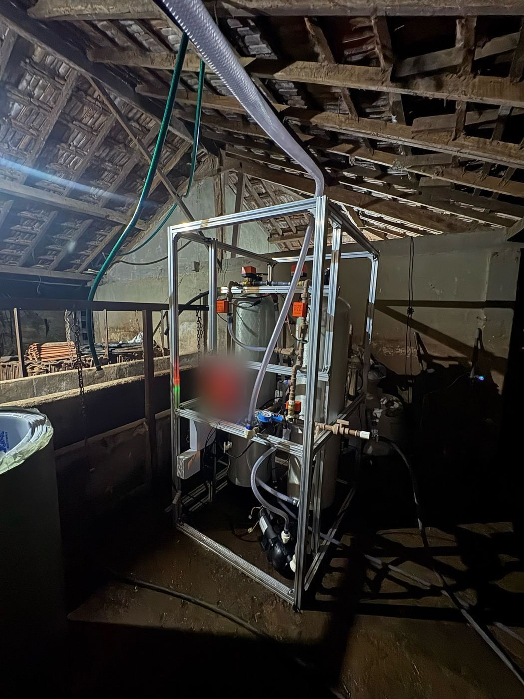
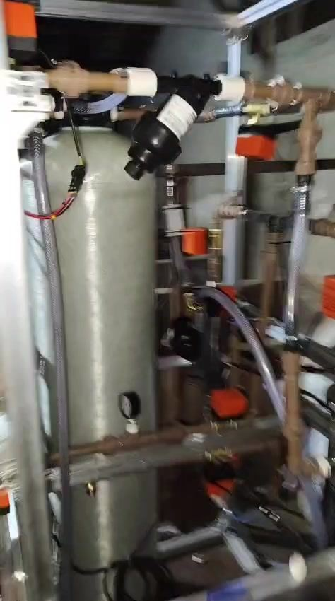
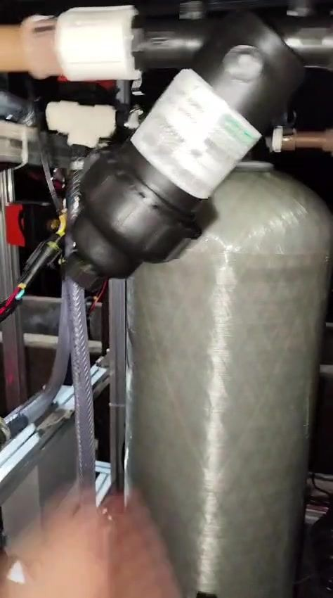
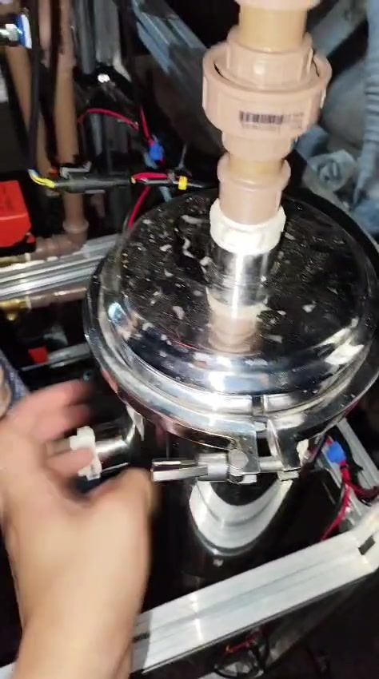
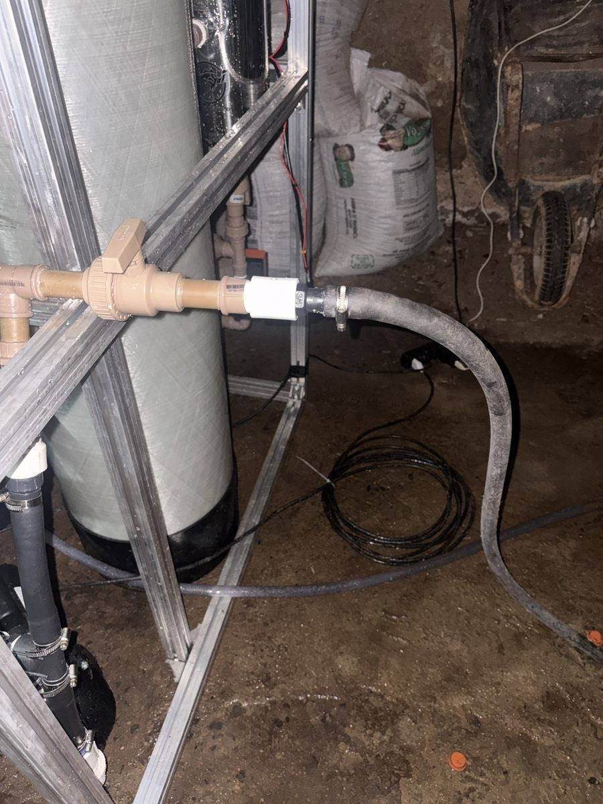
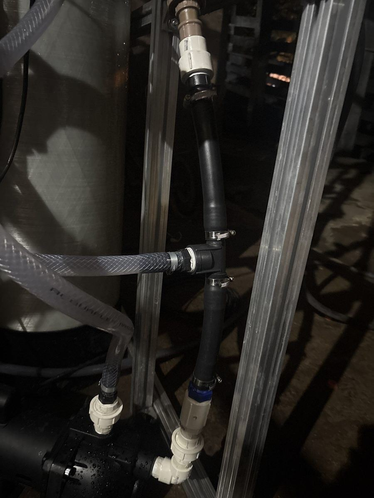
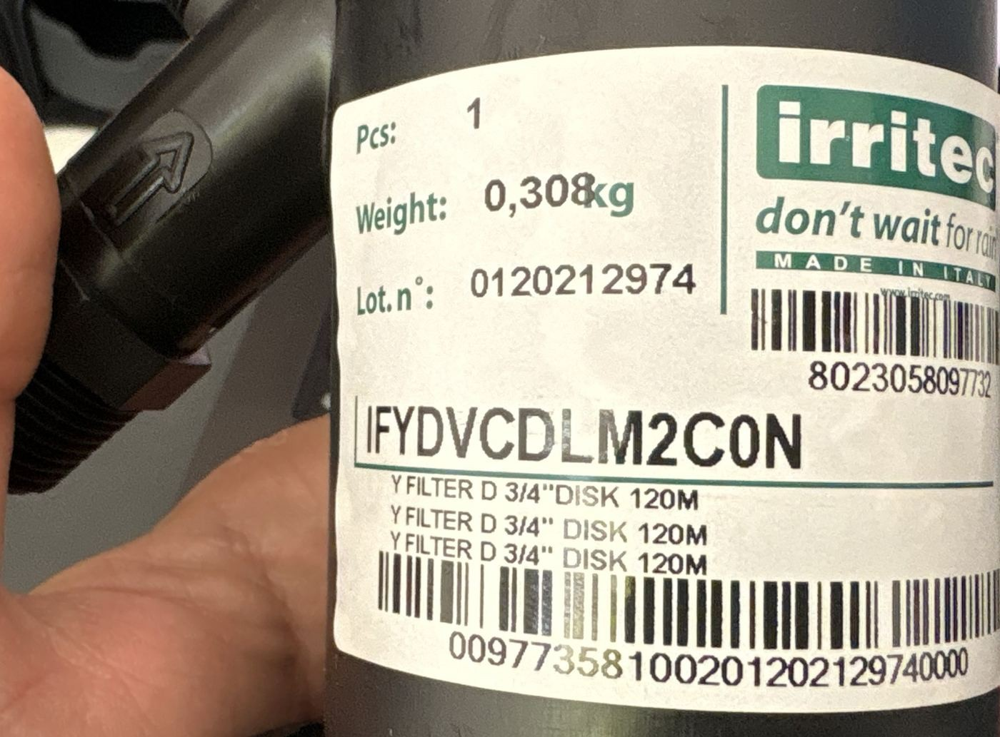
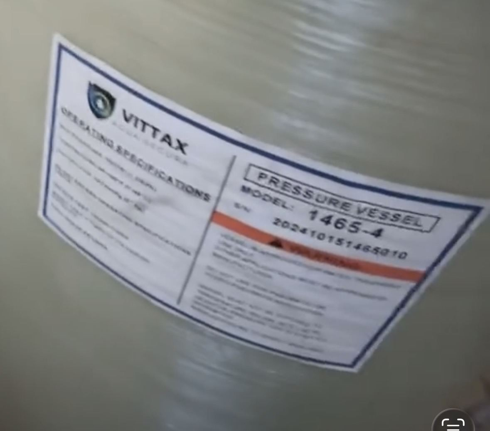
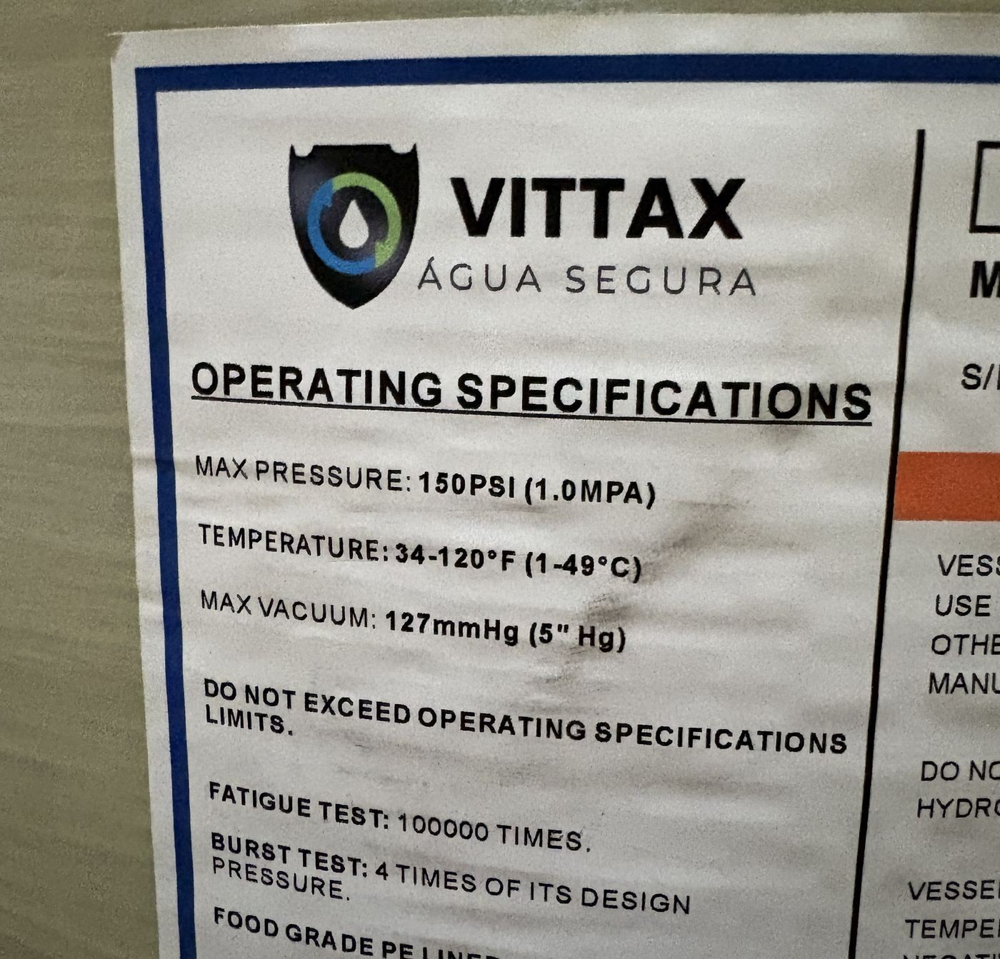
Fotos de catálogo, não são as peças instaladas. Não há foto real das crepinas nem da mídia. Estas imagens são da loja que vendeu os itens das notas fiscais (Era Ambiental), do mesmo modelo.
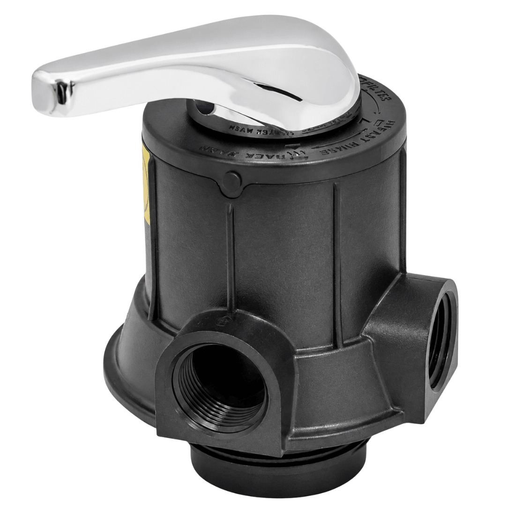
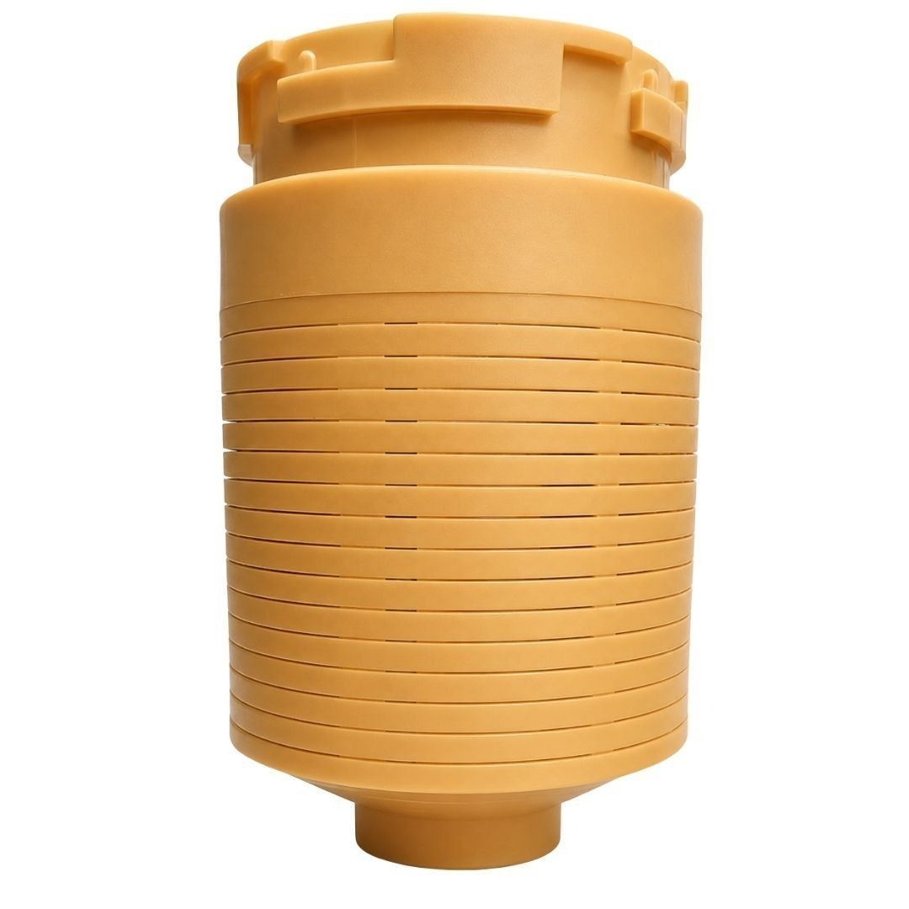
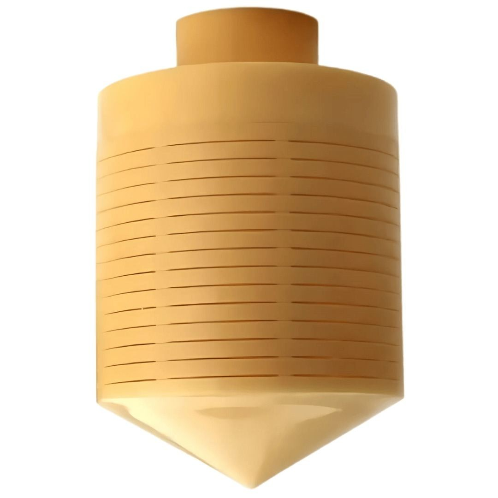
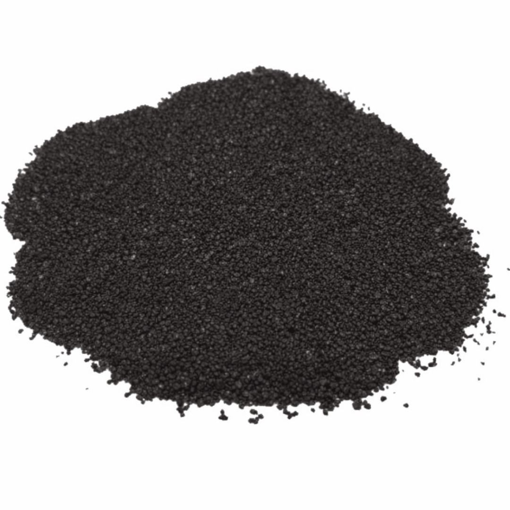
05Campo
O que aconteceu no campo
Linha do tempo da máquina de campo, com a visita de 02 a 04/10/2026 em destaque, e os problemas observados.
Aproximado
Relato
Antes da visita
- Jul2026
Montagem dos vasos de mídia
- Feito
- VITTAX 1465-4 (14" × 65"), válvula manual Runxin F56A1, crepinas JD211/JD212. Camadas, de baixo para cima: areia grossa, areia média, antracito.
- Observado
- Vaso “~60% cheio”.
- 13–27/092026
Janela de campo: duas linhas iguais (mídia → UF)
- Feito
- Bomba ~1 CV, 12 válvulas motorizadas, alimentação por caixa d'água de ~1.000 L. Limpeza das UFs.
- Observado
- UFs sujas limitando a vazão. Uma UF foi de ~400 para ~1.400–1.600 L/h com a limpeza; a outra chegou a ~1.200–1.300 L/h e caiu para menos de 300 L/h. A UF ficou “muito preta”. O pico ao ligar “quase estourou a vedação dos vasos de mídia”. Leitura de 7,46 bar na UF2. A sucção colapsava com mangueira fraca. A caixa d'água acabou e limitou os testes.
- 28/092026
Teste de pressão
- Observado
- 2 bar estático; 1,8 bar pela mídia; 4 bar ao fechar válvulas, e a bomba desligou. Suspeita de mídia entupida.
- Decidido
- Cada linha testaria uma alternativa: L1 mídia → 3 vias → UF1 e L2 disco → UF2. O que foi montado em 03/10 foi diferente D1. Limpar as UFs de 3.000 L/h. Entrega por boia mecânica, com parada pela pressão; religamento indefinido.
Visita de campo · 02 a 04/10/2026
- 02/10sex
Chegada
- Observado
- Mídia de uma linha “totalmente preta” e as duas UFs entupidas.
- 03/10sáb
Mudança das linhas
- Feito
- Um vaso de mídia trocado por filtro de disco. Instaladas a válvula de 3 vias e a boia no bebedouro. Vídeo da montagem: L1 = disco → UF1; L2 = mídia → 3 vias → disco → UF2. Disco Irritec YDV 3/4" 120 mesh (~130 µm), um por linha.
- Decidido
- Plano B com UFs de 1.000 L/h descartado (conexão de 1/2" contra linha de 3/4").
- 03–04/10
Lavagens
- Feito
- UF lavada à mão com água corrente e desentupida por retrolavagem improvisada (mangueira, pressão da caixa, água bruta): ~200 → ~1.000 L/h D8. Retrolavagens feitas à mão. Mídia lavada inúmeras vezes, inclusive ~20 min de retrolavagem.
- Observado
- A mídia seguiu “sujando a água”. No balde, a água depois da mídia estava mais suja que a de entrada; depois do disco, sem melhora visível. Disco com pouca perda de carga. A caixa esvaziou e veio água do fundo com partículas grandes.
- 04/10dom
Depois da visita
- 05/10seg
Medição da bomba
- Observado
- Vazão aferida com balde (erro < 100 L/h): ~1.500–1.700 L/h. Sem bomba, a caixa dava ~500–600 L/h. Causa não testada.
- Decidido
- Caminho considerado mais seguro: disco + membrana, sem filtro de mídia; procurar discos em cascata. Trazer a máquina para a PUC. Válvula de alívio de 6 bar D5.
- 06/10ter
Teste com o responsável local
- Feito
- Vazamento da UF: teflon; depois, abraçadeira desmontada e remontada com mais aperto, e o vazamento parou.
- Observado
- Bomba desarmando por sobrepressão em < 2 s; a pressão passava de 5 bar. Vazão zero com as duas linhas abertas: a válvula 0 (saída final) “fechava mas não abria”. Enchimento só pelo bypass. UF vazando de novo. Retrolavagem automática não acionou (limite de 8 bar, “alto de propósito”).
- Decidido
- Operar só em bypass e retirar a máquina o quanto antes.
- 07/10qua
Teste só com a coluna d'água (~2 bar)
- Observado
- Vazão “muito baixa”. A UF desentupida colmatou de novo, com só o disco a montante. UF em “bloqueio severo” D7. A linha com mídia, 3 vias e disco a jusante não resolveu.
- Decidido
- 2ª válvula em paralelo à válvula 0. Início do piloto passa para dezembro. Descartada a retrolavagem entre linhas com a mesma água, salvo com duas bombas ou fonte limpa D6. Pedidas fotos da crepina.
- 08/10qui
Retirada
- Decidido
- Retirar a Yara sem novos testes; as mídias estragadas serão descartadas.
- 09/10sex
Call com o Gabriel
- Decidido
- Pedir à Era Ambiental a documentação das membranas que ela tem disponíveis, só para conhecer as opções (não são as membranas instaladas na Yara). Sem teste de bancada.
- 16/10sex
Volta da Yara à PUC (previsto)
- Previsto
- Medir se o tubo central do vaso chega ao fundo e conferir a composição das linhas.
Fonte: histórico de campo da Yara v2 (09/10/2026, reformatado em 12/10), que cita as calls de 28/09 a 09/10, o vídeo de 03/10 e o Google Doc de dúvidas; levantamento de problemas de 04/10/2026 (itens de 13–27/09).
Problemas observados
| # | Problema | O que se viu | Situação |
|---|---|---|---|
| P1 | Mídia escureceu a água | Água preta saindo do filtro de mídia, mais suja que a de entrada, mesmo depois de inúmeras lavagens e ~20 min de retrolavagem. O antracito chegou à UF. Os vasos foram transportados cheios, com mídia e água (4 h de carro). | Causa não confirmada D10 D11 |
| P2 | UF colmatada | Duas vezes: com antracito vindo da mídia e com só o disco a montante. Recuperou de ~200 para ~1.000 L/h e entupiu de novo. | Sem datasheet da UF instalada; recuperação incerta D7 D8 |
| P3 | Disco sem efeito visível | Pouca perda de carga; sem melhora visível de turbidez no balde. | Sem curva do disco sujo |
| P4 | Sobrepressão e desarme | Desarme em < 2 s acima de 5 bar; 4–5 bar quase na hora ao ligar; 7,46 bar na UF2 (set.); pico ao ligar que quase estourou a vedação dos vasos. | Setpoint não confirmado D3 D4 |
| P5 | Vazamento no cabeçote da UF | Vazou ao ligar. Parou ao remontar o O-ring, voltou, parou de novo com a abraçadeira remontada com mais aperto. | Causa em aberto D9 |
| P6 | Bomba abaixo do nominal | ~1.500–1.700 L/h medidos contra 3.000 L/h nominais. | Gargalo não testado D2 |
| P7 | Válvula de saída travada | A válvula 0 “fechava mas não abria”: vazão zero com as duas linhas abertas. | Decidida 2ª válvula em paralelo |
| P8 | Boia fechada | Bebedouro cheio de chuva; a máquina parava pela pressão. Religamento depois que a boia fecha não definido. | Em aberto |
| P9 | Caixa d'água esvaziou | Veio água do fundo com partículas grandes; a falta de água limitou os testes. | Captação em reservatório é pergunta da seção 07 |
| P10 | Retrolavagem automática não disparou | Limite de diferencial de pressão em 8 bar, “alto de propósito”. Todas as retrolavagens foram manuais. | Gatilho em aberto |
| P11 | Sucção colapsava | Com mangueira fraca, a sucção colapsava por vácuo. | Trocada por mangueira com lona interna ou tubo rígido |
Fibras de UF com antracito
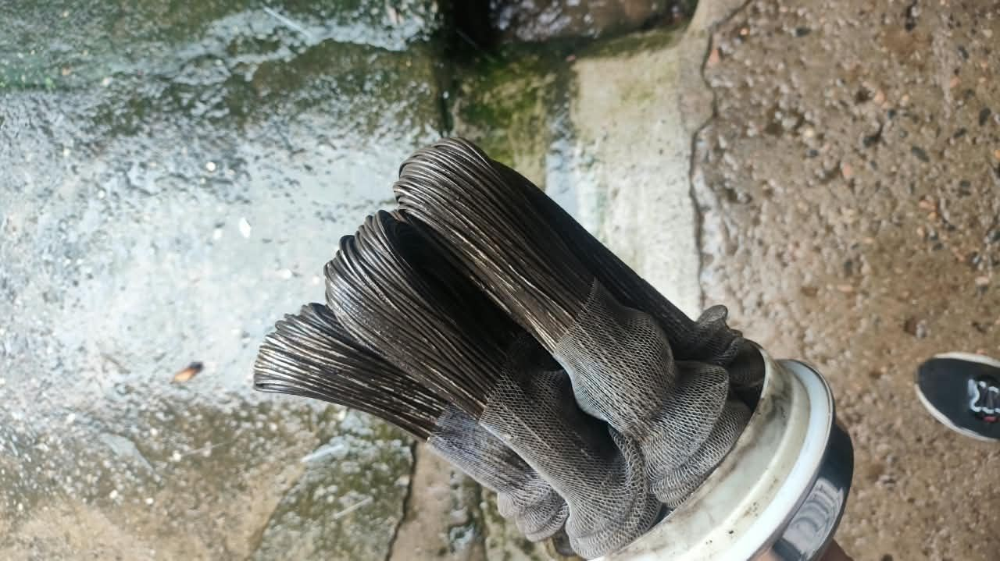
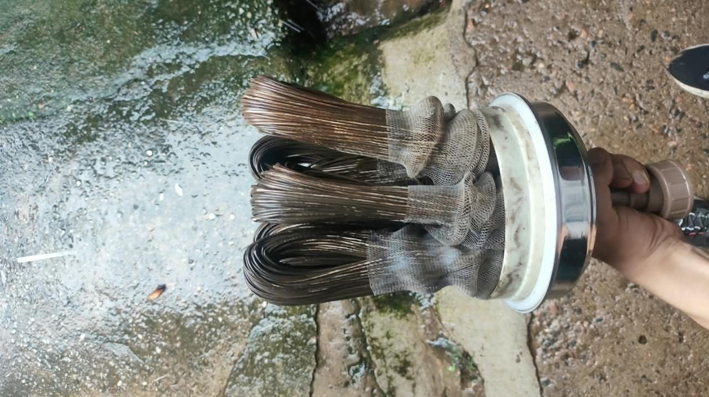
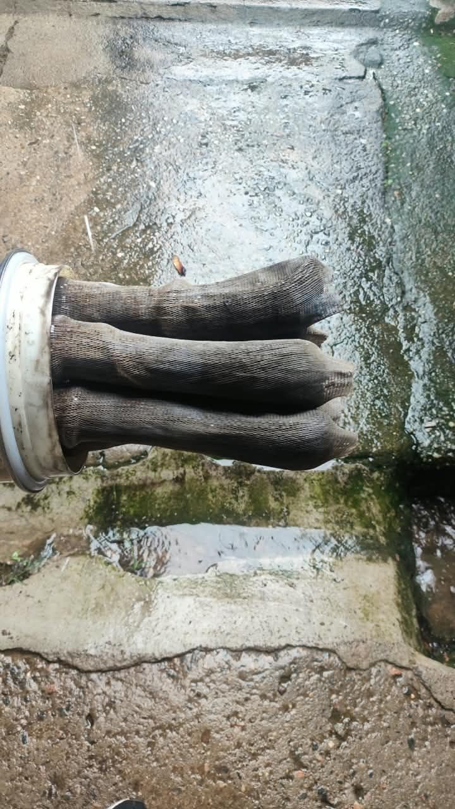
06Divergências
Divergências em aberto
Onde as nossas fontes dizem coisas diferentes. Mostramos as versões lado a lado, sem escolher.
Máquina e montagem
| # | Tema | Versão A | Versão B | Como confirmar |
|---|---|---|---|---|
| D1 | Composição das linhas | Google Doc de dúvidas e vídeo de 03/10: L1 = disco + UF; L2 = mídia (areia + antracito) + 3 vias + disco + UF. | P&ID da máquina como montada: “Filtro mídia 1” e “Filtro mídia 2”, cada um seguido de “Filtro UF”; sem filtro de disco e sem válvula de 3 vias. | Conferência das linhas e foto do disco instalado na PUC, a partir de 16/10. |
| D9 | Causa do vazamento no cabeçote da UF | (a) O-ring montado errado (Manu, 07/10). | (b) Sobrepressão deslocou o O-ring (doc de dúvidas). (c) Vazamento por a UF estar entupida (Manu, 07/10). Não se sabe se resolveu o aperto maior ou só desmontar e montar. | Foto do cabeçote com o O-ring. |
| D22 | O que há na sucção | P&ID: “Poço, açude ou rio” → “Filtro para bomba” → válvula manual → Bomba 1. | Panorama de peças e histórico: no teste, a fonte era uma caixa d'água de ~1.000 L; na sucção, mangueira com lona ou tubo rígido e válvula de pé/retenção; o panorama não registra filtro na sucção. | Conferência da sucção na PUC, a partir de 16/10. |
| D23 | Retorno do concentrado (válvula 11) | P&ID: a linha da válvula 11 sai das UFs e volta para a sucção da Bomba 1. | Levantamento de problemas (04/10): o ponto exato de retorno da V11 não foi documentado. | Conferência da tubulação na PUC, a partir de 16/10. |
| D12 | Tanques compatíveis com a F56A1 | Fabricante (Runxin): tanques de 6" a 12". | Loja Era: tanques de 6" a 14". O vaso instalado é de 14". | Manual da F56A1 (pedido à Era). |
| D13 | Dados do filtro de disco | Fabricante (Irritec): 120 mesh = 130 µm; 10 bar a 20 °C, sem pressão mínima. | Revendas brasileiras: 125 µm; mínimo 3 bar, máximo 8 bar. Uma revenda dá 8 bar como limite a 41–60 °C. | Ficha técnica oficial do modelo. |
Pressão e bomba
| # | Tema | Versão A | Versão B | Como confirmar |
|---|---|---|---|---|
| D2 | Vazão nominal da bomba | Doc de dúvidas (contexto): “da ordem de 2.000–3.000 L/h”. | Doc de dúvidas (seção de pressão) e histórico: 3.000 L/h. | Etiqueta ou catálogo da bomba Dancor AP3C. |
| D3 | Corte por sobrepressão | Planejamento interno: corte fixo em 3 bar. | Campo: a máquina desarmou acima de 5 bar. O setpoint usado no teste não está confirmado. | Confirmar o valor antes do piloto. |
| D4 | Pressão no desarme | Calls de 05/10 e 06/10: 4–5 bar quase na hora ao ligar. | Doc de dúvidas: a pressão passava de 5 bar. | Medir com manômetro na volta à PUC, a partir de 16/10. |
| D5 | Válvula de alívio mecânica | Semanal de 05/10: válvula de alívio de 6 bar. | Planejamento: 4 ou 6 bar, “pendente decisão” (primeiro medir, depois comprar). | Registro da decisão. |
Ultrafiltração e retrolavagem
| # | Tema | Versão A | Versão B | Como confirmar |
|---|---|---|---|---|
| D6 | Retrolavagem entre linhas | Doc de dúvidas: a água filtrada de uma linha faz a retrolavagem da UF da outra. | Call de 07/10: descartada a retrolavagem entre linhas com a mesma água, salvo com duas bombas ou fonte limpa. | Especificação da nova tubulação. |
| D7 | Perda de carga de ~2 m.c.a. na UF | Doc de dúvidas: ~2 m.c.a. foi a perda inicial, que aumentou até o bloqueio. | Plano do pacote (anterior): “ΔP de ~2 mca = bloqueada”. | Pressões medidas antes e depois da UF; identificação do modelo instalado. |
| D8 | Como as UFs foram regeneradas em 03–04/10 | Levantamento de problemas (04/10): “regeneradas pelo protocolo”: flush/retrolavagem → água sanitária → enxágue → ácido cítrico → enxágue; resultado desconhecido. | Doc de dúvidas e histórico: lavagem manual com água corrente e retrolavagem improvisada, “sem química”. No vídeo de 03/10: “por enquanto eu não limpei as membranas não. Mas já comprei o cloro e um detergente aí, caso a gente precise.” | Confirmar com o Manu o que foi feito em campo. |
Filtro de mídia
| # | Tema | Versão A | Versão B | Como confirmar |
|---|---|---|---|---|
| D10 | Causa da água preta (não confirmada) | Manu (05/10): montagem ou limpeza inicial, ou transporte dos vasos cheios (4 h de carro). | Gabriel (05/10 e 07/10): crepina mal dimensionada ou danificada, e carvão sem molho ou lavagem. | Fotos da crepina e medição do tubo central até o fundo do vaso, a partir de 16/10. |
| D11 | Autoria da suspeita de crepina “tipo cone com furos” | Histórico de campo (call de 07/10): levantada pelo Manu. | Plano do pacote (mesma call): suspeita do Gabriel. | Reouvir a call de 07/10. |
Água bruta e meta
| # | Tema | Versão A | Versão B | Como confirmar |
|---|---|---|---|---|
| D14 | Nome do manancial da amostra de 24/11/2025 | Nome do arquivo do laudo: “SEPOTUBA”. | Campo “Nº Amostra” do laudo e relatório da visita: “Captação Rio Juba”. | Em aberto: segundo o Rodrigo, a equipe da fazenda também não chegou a uma conclusão. Confirmar o ponto de coleta com o laboratório. |
| D15 | Manancial e Fe/Mn alto | Briefing pré-visita e nota “ETA convencional” (09/03/2026): Ribeirão Três Pontes, ferro 3–10× e manganês 2–18× acima do normal; coliformes 95.000 UFC/100 mL. São dados de campo de outra fazenda. | Relatório da visita e laudos: Rio Juba. Fe e Mn nunca foram medidos na captação; só no poço (Fe < 0,05; Mn < 0,09 mg/L). | Análise de Fe e Mn na captação, no reservatório e no bebedouro. |
| D16 | Leitura da água na captação | Análise técnica, versão 1 (jun/2026), pela CONAMA 357: só o I12 é não conforme; a contaminação está no armazenamento e na distribuição, “não na fonte”. Protocolo v0.7 (23/07): a água “já é boa na fonte”. | Análise técnica, versão posterior (jun/2026), pela Portaria 888: todos os pontos reprovam, “inclusive a captação” (E. coli 20; coliformes 609). | Os dados são os mesmos; muda a régua. Decidir a régua do piloto. |
| D17 | Edição do NRC citada | PDF da água ideal: NRC (1974), Nutrients and Toxic Substances in Water for Livestock and Poultry; NASEM (2016). | Análise técnica: NRC (2000), Nutrient Requirements of Beef Cattle; ANZECC (2000). Nota “ETA convencional”: “NRC (2000): 9–23% de perdas no GMD”. | Conferir a edição citada em cada documento. |
| D18 | Meta de turbidez | PDF da água ideal: turbidez é “indicador” da Régua 2, sem valor-alvo. | Análise técnica: VMP de 5 NTU da Portaria 888 como objetivo do piloto. | Definir se 5 NTU entra como meta. |
| D19 | Faixas sem classe no PDF | Sulfato: aceitável 500–1.000; evitar > 1.500. A faixa 1.000–1.500 não tem classe. | Nitrato: aceitável 10–20; evitar > 40. A faixa 20–40 não tem classe. | Lacuna do próprio PDF. Não afeta Tangará: valores medidos muito abaixo. |
| D21 | Residual de cloro da Portaria 888 | Nota “ETA convencional”: residual de 0,2–2 mg/L. | Nota sobre cloro: mínimo 0,2 e máximo 5 mg/L de cloro livre. | Conferir o artigo da Portaria. |
Piloto
| # | Tema | Versão A | Versão B | Como confirmar |
|---|---|---|---|---|
| D20 | Tamanho do piloto | Rodrigo (12/10/2026): a princípio, 56 animais tratados e 56 de controle, a confirmar pela fazenda do piloto. Substitui a versão de 150 + 150. | Protocolo de teste v0.7 (23/07/2026): 150 + 150 animais. | Confirmação pela fazenda do piloto. |
| D24 | Duração do piloto | Status do piloto e reunião de 22/04/2026: 90 dias de operação, mais ~2 semanas de instalação e calibração (~100 dias corridos). | Call de 09/10/2026: 90 a 120 dias de operação. | Confirmar com a fazenda do piloto. |
| D25 | Época do piloto | Plano de 22/04/2026: Fase 1 em ago–set/2026, na estação seca de MT, para isolar a variável água; a chuva ficaria para a Fase 2. | Calls de 07/10/2026: início em dezembro, com possível adiamento para janeiro. | A confirmar se a Fase 1 mantém o mesmo desenho com a nova data. |
Fontes: tabela de divergências do histórico de campo v2; levantamento de problemas de 04/10/2026; análise meta × água de Tangará; notas sobre filtro de disco, cloro e ETA convencional; vídeo de 03/10/2026; P&ID da máquina como montada; status do piloto e reunião de 22/04/2026; calls de 07/10 e 09/10/2026.
07Perguntas
O que pedimos ao Gabriel
35 perguntas, em sete grupos, cada uma com o dado que a motiva.
A pergunta central é a última: que trem de tratamento você escolheria para entregar água dentro da meta para o gado durante todo o piloto, com instalação em ~4 a 8 semanas, com ou sem membrana, mesmo que manual por ora. As demais detalham cada etapa. Suas recomendações prevalecem sobre definições anteriores da Wara. Onde você já respondeu numa call, a resposta fica registrada logo abaixo da pergunta, como histórico; pode responder de novo.
Água bruta e captação
- 01
Nas fazendas-alvo, a água bruta vem de reservatórios grandes, normalmente de geomembrana. Como você faria a captação nesse tipo de reservatório (profundidade, distância do fundo, captação flutuante, tela na sucção) para não puxar lodo, algas e material sedimentado?
No teste, a caixa d'água esvaziou e veio água do fundo com partículas grandes. O reservatório da fazenda do piloto é aberto e teve alga superficial em 22/04/2026.
- 02
Que análises de água você pediria antes de recomendar o trem? Quais contaminantes da água bruta mais ameaçam a UF neste tipo de aplicação?
A análise de mai/2026 tem 8 parâmetros; pH e temperatura só de uma coleta anterior. Não há Fe, Mn, COT/cor, SDI nem algas na captação, no reservatório ou nos bebedouros.
Resposta do Gabriel na call de 07/10/2026
- Na comparação fonte × reservatório, todos os parâmetros pioram no reservatório: matéria orgânica, terra, animais mortos e algas contribuem para a degradação.
- Alcalinidade elevada no reservatório indica cálcio: risco de incrustação.
- Faltam na análise atual: DBO (matéria orgânica) e inorgânicos (alumínio, cálcio, manganês, magnésio).
- Análise mais completa necessária antes de comissionar o sistema definitivo; você enviaria a lista de parâmetros recomendados.
Pré-filtragem
- 03
Buscamos uma solução de 80/20 (pareto), que resolva a maior parte dos casos com o mínimo de etapas: um trem de tratamento, com ou sem membrana, que garanta que vírus, bactérias e turbidez não cheguem à água que o boi bebe, sabendo que alguns locais vão exigir módulos adicionais. Dá para ter um sistema padrão? Se a rota tiver UF, qual é o trem mais seguro para garantir que ela não entupa, não rasgue e não perca a integridade dos poros?
Requisito de troca de elementos no máximo a cada 2 a 3 anos. A UF entupiu duas vezes em campo.
Resposta do Gabriel na call de 09/10/2026
- UF remove bactérias, vírus e turbidez, mas não salinidade, sulfato ou nitrato.
- Sulfato, nitrato e salinidade exigem módulos específicos.
- A análise de água da fazenda do piloto é essencial para mapear todos os contaminantes.
- 04
Para este perfil de água, que pré-tratamento você usaria (só filtro de disco, disco em cascata com malhas progressivamente mais finas, filtro de mídia ou outro), seja para proteger uma UF, seja dentro de outra rota?
O disco de ~130 µm teve pouca perda de carga, mas sem melhora visível na turbidez da água coletada na caixa d'água da fazenda. Não há curva de perda de carga do disco sujo.
Resposta do Gabriel na call de 07/10/2026
- Filtros de cartucho autolimpantes são o padrão da indústria para sistemas UF; mídia precisa de troca anual.
- Adicionar coagulante na entrada do filtro de areia para tratar matéria orgânica.
- 05
Se disco em cascata: quais malhas (µm) e quantas etapas? Se a rota tiver UF, qual o risco de pular de ~130 µm para ela?
Hoje há uma só etapa de disco antes da UF. A família do disco instalado vai até 200 mesh (~80 µm).
- 06
Se a rota tiver UF, qual o gap máximo de poro entre a última etapa de pré-filtro e a UF?
Disco de ~130 µm direto na UF; o poro da UF instalada é desconhecido.
- 07
Uma solução de mercado usa microfiltração de 15 µm, 5 µm e depois UF. Faz sentido para água de bebedouro? Esses elementos são fáceis de comprar, por exemplo, de fornecedores na China?
A reposição do disco foi pedida com malha “ideal até 5 µm”; filtro de disco não chega a isso.
- 08
As fontes divergem sobre o disco instalado: o grau é 130 µm (fabricante) ou 125 µm (algumas revendas)? A pressão máxima é 10 bar a 20 °C (fabricante) ou 3 a 8 bar (revendas brasileiras)? Que valores você usaria no projeto?
Etiqueta “Y FILTER D 3/4" DISK 120M”. Pela tabela do fabricante, 120 mesh = 130 µm. D13
Mídia, vaso e crepinas
- 09
O filtro de mídia que piorou a água: qual a hipótese principal (montagem, mídia errada, crepina, frete com mídia molhada, falta de lavagem de startup, outra)?
A água saiu preta do filtro de mídia. Foram inúmeras lavagens, inclusive ~20 min de retrolavagem, e ele continuou “sujando a água”. Não temos certeza se a limpeza inicial foi correta. Os dois filtros foram transportados cheios, com mídia e água (4 h de carro). O antracito chegou à UF. D10
Resposta do Gabriel na call de 07/10/2026
- Crepina mal dimensionada ou danificada no transporte (furos grandes demais para o material filtrante).
- Ordem das mídias possivelmente incorreta (areia grossa, areia fina, antracito).
- Carvão não deixado de molho antes do enchimento; vaso não preenchido com água antes.
- Crepina do tipo cone com furos, não poros, provavelmente inadequada. D11
- 10
O vaso é 14" × 65", mas a válvula F56A1, as crepinas JD211/JD212 e o tubo central de 3/4" são especificados para tanques de até 12" ou 13". Isso pode explicar o antracito passando? Que conjunto de válvula, tubo e crepinas você usaria neste vaso?
O kit NEA36 da própria Era usa válvula F56F1 (6 m³/h) com tubo e crepinas de 1". As fontes divergem sobre a F56A1: o fabricante indica tanques de 6" a 12"; a loja Era anuncia 6" a 14". D12
Resposta do Gabriel na call de 07/10/2026
- Pediu fotos da crepina e o pedido de compra, para verificar se a ranhura é compatível com o material filtrante.
- 11
A bomba consegue retrolavar este vaso?
Retrolavagem recomendada para o NEA36: 3 a 4 m³/h. A bomba entrega ~1,5 a 1,7 m³/h.
Resposta do Gabriel na call de 07/10/2026
- A retrolavagem dos filtros de mídia requer vazão de 2 a 2,5 vezes a vazão de filtração.
- 12
Se o tubo central não chegar ao fundo do vaso, que efeito isso tem na filtração e na lavagem?
O vaso estava “~60% cheio”. A medição do tubo central está prevista a partir de 16/10, na volta da máquina à PUC.
- 13
Vale reaproveitar o vaso de mídia trocando mídias e crepina, ou o vaso deve sair?
As mídias estragadas serão descartadas. Em 05/10, o caminho considerado mais seguro foi disco + membrana, sem filtro de mídia.
Resposta do Gabriel na call de 07/10/2026
- Separar filtro de areia e filtro de carvão em vasos distintos, sem misturar num multimídia único.
Ultrafiltração (UF), se a rota mantiver membrana
- 14
Sem ficha técnica das membranas atuais (só sabemos a vazão nominal de ~3.000 L/h), como você avaliaria se elas servem, por exemplo com teste de vazão com água limpa ou teste de integridade? Ou recomendaria trocar por um modelo com ficha técnica conhecida?
Modelo, fornecedor e área de membrana desconhecidos; não há datasheet das membranas instaladas. Os datasheets pedidos à Era Ambiental em 09/10 são das membranas que ela tem disponíveis, só para conhecer as opções.
- 15
Para uma UF de ~3.000 L/h, ~2 m.c.a. de perda de carga indica membrana limpa ou já bloqueio?
Uma fonte registra ~2 m.c.a. como perda inicial, que depois evoluiu até bloqueio; outra registra ~2 m.c.a. como bloqueio. Hoje a UF tem obstrução severa, que impede a operação normal. D7
- 16
Uma área de membrana bem maior resolveria o entupimento, combinada com recirculação do concentrado, retrolavagens programadas e talvez mais membranas em paralelo? Por que resolveria ou não? Que fluxo (L/m²·h) e que área você usaria para essa água?
1º entupimento com antracito vindo da mídia. 2º entupimento com só o disco de 130 µm a montante.
- 17
Dá para dimensionar a filtragem para entregar até 3.000 L/h direto no bebedouro, acionada pelo nível dele, ou um tanque-pulmão é necessário? Se der, o que isso exige de área de filtração (ou de membrana) e de bomba, considerando as muitas partidas e paradas? Se não der, por quê?
Consumo de ~2.000 a 3.000 L/dia, concentrado em ~2 h. Acionamento pela boia do bebedouro.
- 18
Que recuperação (% da água captada que vira água filtrada) é realista para essa água? O que fazer com o rejeito das retrolavagens e do concentrado na fazenda?
Meta de até 3.000 L/h; água bruta de reservatório de geomembrana.
- 19
Qual o gatilho ideal da retrolavagem (tempo de operação, diferencial de pressão na membrana, queda de vazão, turbidez), em que valores e com que frequência?
Em campo, a retrolavagem automática não disparou. As retrolavagens foram feitas à mão.
- 20
Que pressão e que vazão de retrolavagem você recomenda para a nossa UF?
Não temos ficha técnica da UF instalada.
- 21
Hoje a água filtrada de uma linha faz a retrolavagem da UF da outra. Esse arranjo atende, ou é melhor um pequeno tanque de água já filtrada só para retrolavagem? Com só duas linhas, a que fica filtrando consegue fornecer a vazão e a pressão de retrolavagem da outra, ou isso exige mais módulos em paralelo ou uma bomba de retrolavagem?
A válvula 8 cruza as linhas (pré-filtro 1 ↔ UF 2, pré-filtro 2 ↔ UF 1). Em 07/10, a retrolavagem entre linhas com a mesma água foi descartada, salvo com duas bombas ou fonte limpa. D6
Resposta do Gabriel na call de 07/10/2026
- O arranjo atual (uma linha lava a outra) tem pressão insuficiente para uma retrolavagem adequada.
- Solução: reservatório de água limpa de ~1.500 a 2.000 L para a retrolavagem.
- 22
A retrolavagem dispara pela diferença de pressão na membrana, mas o limite atual (8 bar, definido alto de propósito) não foi atingido em campo, e a retrolavagem automática nunca disparou. Que limite você usaria? A retrolavagem deve ser feita com água já filtrada (permeado), ou água bruta pré-filtrada basta no curto prazo? Precisa de enxágue para o esgoto antes de voltar a filtrar?
O limite de diferencial de pressão é 8 bar, definido alto de propósito.
- 23
Uma retrolavagem improvisada com a pressão da caixa (~1.000 L) desentupiu uma UF. É aceitável como contingência ou é prática a evitar?
Lavagem manual com água corrente e retrolavagem só com a pressão da caixa e água bruta: vazão de ~200 para ~1.000 L/h. Depois, a UF entupiu de novo. D8
- 24
Que limpezas químicas (CIP) usar se a perda de carga não voltar depois da retrolavagem? No nosso caso, que solução e procedimento você usaria, e como saber se a membrana ainda tem recuperação ou precisa ser trocada?
Não sabemos se a membrana ficou realmente desentupida ou se os poros continuaram colmatados. As fontes divergem sobre se houve limpeza química em 03–04/10. D8
Resposta do Gabriel na call de 07/10/2026
- CEB: limpeza diária, de ~15 min, automática, com hipoclorito de sódio.
- CIP: a cada 45 a 60 dias, de algumas horas, com hipoclorito, ácido cítrico e soda.
- 25
Vazamento no cabeçote da UF: qual a causa mais provável? As fontes divergem: O-ring montado errado; sobrepressão que tirou o O-ring do lugar; ou vazamento por a UF estar entupida. Também não sabemos se resolveu o aperto maior ou só desmontar e montar de novo.
Vazou ao ligar, com 4 a 5 bar quase na hora. O O-ring foi achado montado errado e remontado, e o vazamento parou. Voltou a vazar mesmo remontado corretamente. Parou depois de desmontar a abraçadeira e remontar com mais aperto. D9
- 26
Podemos dosar cloro antes da UF? Em que dose e com que tipo de membrana? Numa rota sem membrana, ou com dosagem manual, como você usaria o cloro?
Temos dúvida se cloro antes da UF danifica a membrana. A dosadora está instalada e nunca foi testada em campo. A nota de 04/10 recomendava não dosar cloro de forma contínua no piloto. Era uma posição anterior da Wara sobre cloro na água entregue ao gado. A recomendação do Gabriel (call de 07/10/2026) prevalece: o cloro pode ser dosado antes da membrana por motivo de processo e é retirado antes de a água ir ao gado. D21
Resposta do Gabriel na call de 07/10/2026
- Membranas de UF são compatíveis com cloro. Em outra instalação, membranas com metal corroído: a hipótese inicial era o cloro, mas o problema provavelmente é a baixa qualidade da estrutura e das conexões do fornecedor.
- Cloro é recomendado na entrada da UF, para evitar biofouling; recomendou dosar hipoclorito de sódio na entrada da membrana.
- Para o cloro residual na água do gado: filtro de carvão depois da membrana (carvão é declorante) ou bissulfito de sódio (sequestrante de cloro e oxigênio).
Prevalece sobre a nota de 04/10/2026, que era uma posição anterior da Wara sobre cloro na água entregue ao gado.
Válvulas e proteção
- 27
Na saída para o bebedouro, que arranjo de válvulas você usaria para que uma válvula travada não corte a água (redundância)? Vale ter uma válvula de alívio mecânica depois da bomba? Como organizar as camadas de proteção (corte da bomba, alívio mecânico) em relação ao limite dos elementos filtrantes?
A válvula de saída final travou fechada: “fechava mas não abria”. Com as duas linhas abertas, a vazão foi zero. Em 07/10, decidimos por uma 2ª válvula em paralelo à de saída.
- 28
Que pressões e medições de processo são essenciais para prever entupimento e perda de integridade (pressão antes e depois de cada etapa, vazão, turbidez da água filtrada, teste periódico de queda de pressão)? Em que valores você agiria?
A UF chegou a bloqueio durante a operação em campo; se ~2 m.c.a. era perda inicial ou já bloqueio está em aberto. O P&ID tem 5 pontos de indicação de pressão (PI): descarga da Bomba 1, saída de cada filtro de mídia, linha de retorno da válvula 11 e saída das UFs.
Pressão e bomba
- 29
Que pressão máxima de corte você usaria para proteger a UF, o vaso e o disco? As fontes divergem: o planejamento interno indica corte em 3 bar; em campo, a máquina desarmou acima de 5 bar. O valor usado no teste não está confirmado.
A bomba ligava e chegava a empurrar água pela saída final, mas em menos de 2 s a pressão passava de 5 bar e ela desarmava. Em setembro, o pico ao ligar “quase estourou a vedação dos vasos de mídia” e houve leitura de 7,46 bar na UF2. A válvula de saída travada pode ter piorado o quadro, mas não explica tudo. D3 D4
- 30
Válvula de alívio mecânica: 4 ou 6 bar? As fontes divergem: em 05/10 falamos de uma válvula de 6 bar; o planejamento ainda registra 4 ou 6 bar como pendente.
Hoje não há alívio mecânico; a válvula de alívio saiu do pedido do vaso. Vaso: 10 bar máx., operação recomendada de 1 a 4 bar. D5
- 31
Com bomba nominal de 3.000 L/h entregando ~1.500 a 1.700 L/h, o gargalo mais provável é sucção, bomba, pré-filtro ou UF?
Vazão aferida com balde (erro < 100 L/h). Sem bomba, a caixa dava ~500 a 600 L/h. O doc original traz duas vazões nominais: “da ordem de 2.000–3.000 L/h” e 3.000 L/h. D2
- 32
Como regular a pressão e a vazão da bomba em vez de só ligar e desligar? Vale bomba pressurizadora ou booster? Em que faixa de pressão a UF deve operar quando a entrada já chega pressurizada?
A pressão de entrada varia por local. Só com a coluna d'água (~2 bar), a vazão ficou “muito baixa”. Na baia do piloto, a rede por gravidade não atinge de forma consistente 0,7 a 2 bar.
Resposta do Gabriel na call de 07/10/2026
- A fazenda pode fornecer água já pressurizada, dispensando a bomba do sistema; o risco é a pressão variável (excesso ou falta, conforme a fazenda).
- A bomba atual não tem controle fácil de rotação; a opção com variação de rotação foi descartada por ora.
- Soluções hidráulicas preferidas, mais simples e seguras: bypass com válvula automática comandado pela pressão (quando há pressão suficiente); recirculação parcial da descarga da bomba com válvula solenoide (cenário intermediário); válvula de controle de pressão na entrada.
Operação em campo e trem final
- 33
O sistema vai operar ao ar livre, em região de clima quente. Que cuidados você tomaria com a temperatura da água e do ambiente e com o sol direto nas carcaças?
Água a 25,3 °C na coleta de nov/2025. Vaso: até 49 °C.
- 34
Algum cuidado com a filtragem em operação intermitente, com muitas partidas e paradas?
Acionamento pela boia do bebedouro. Consumo concentrado em ~2 h por dia.
- 35
Se tivesse que escolher um trem (com ou sem membrana, mesmo que manual por ora) para instalar em ~4 a 8 semanas, qual seria e o que você não faria?
Prazo de ~4 a 8 semanas; início do piloto em dezembro, com possível adiamento para janeiro; 90 a 120 dias de operação. D24 D25 Em 05/10, o caminho considerado mais seguro foi disco + membrana, sem filtro de mídia.